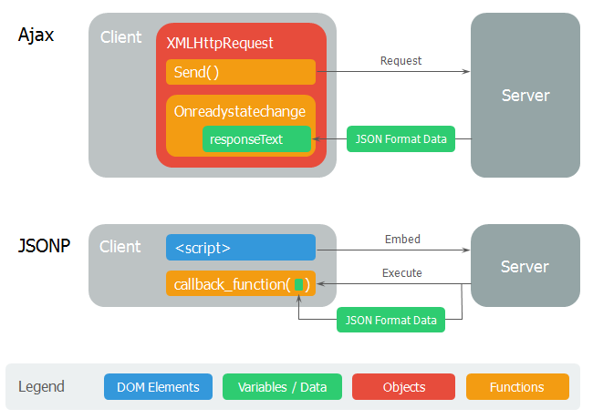

cross domain 문제
- XHR 통신은 다른 도메인 간에는 보안을 이유로 요청이 안 됩니다.
- A 도메인에서 B 도메인으로의 XHR 통신, Ajax 통신을 할 수 없습니다.
- 이것을 동일출처원칙(Same-origin policy/SOP)이라고 한다.
- SOP 부연 설명) 데이터를 호출하는 도메인(protocol[http,https] / Host[x,x,x,x] port[:y])과 데이터를 반환하는 도메인이 일치해야 한다는 것이다.
- 하지만 다른 도메인에 연결된 서버로 데이터를 요청해야만 하는 상황을 만나게 되는데 이때 사용하는 것이 JSONP 입니다.
- 최근에는 CORS라는 표준적인 방법이 제공되고 있어 이를 활용하기도 하지만 프로그램 코드에서 별도로 해야 할 것이 없고, 백엔드 코드에서 헤더 설정을 해야하는 번거로움이 있어 JSONP를 많이 사용합니다.
- JSONP :
- script 태그는 SOP 정책에 속하지 않는 다는 점을 이용해 서로 다른 도메인간의 javascript 호출을 사용한다.
참고 사진
